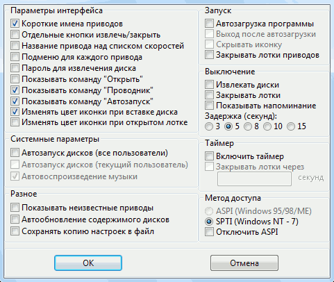
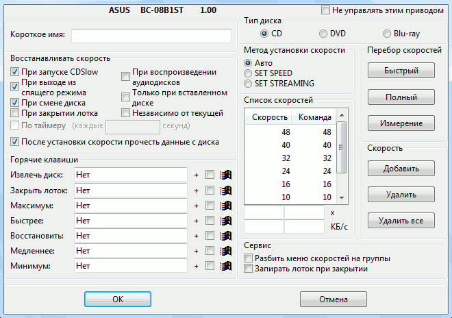

. Через меню,
связанное с этой иконкой, можно управлять работой программы и изменять
её настройки. Иконка программы может изменяться в следующих ситуациях:
. Через меню,
связанное с этой иконкой, можно управлять работой программы и изменять
её настройки. Иконка программы может изменяться в следующих ситуациях:
После запуска программы, в области уведомлений панели задач появляется иконка
. Через меню,
связанное с этой иконкой, можно управлять работой программы и изменять
её настройки. Иконка программы может изменяться в следующих ситуациях:
| - в привод вставлен диск; | |
 |
- открыт лоток привода; |
| - приводы не найдены; | |
| - обнаружены ошибки в работе методов доступа ASPI или SPTI; | |
| - (мигающий) менее чем через 3 секунды будет автоматически закрыт лоток привода; | |
 |
- происходит обращение к приводу. |
Пункт меню "О программе" показывает окно с номером версии CDSlow.
Пункт меню "Справка" вызывает справочное руководство.
Пункт меню "Информация" показывает информацию о возможностях установленных в системе оптических приводов.
Возможность установки скорости и конкретные значения скоростей определяются моделью привода. Некоторые модели не позволяют программное изменение скорости, некоторые позволяют выбирать скорость с шагом 1x. То, как долго привод сохраняет заданную скорость, также зависит от модели. Некоторые модели сохраняют выбранную скорость до перезагрузки компьютера, некоторые до замены диска в приводе. У некоторых моделей скорость может измениться в процессе работы с диском.
Пункт меню "Настройки" вызывает окно настроек программы.
Пункт меню "Очистить конфигурацию" удаляет все настройки программы из реестра Windows.
Команда "Найти приводы" позволяет обновить список приводов. Эта команда может быть полезна после очистки конфигурации программы, при добавлении в работающую систему нового устройства, при изменении букв назначенных дискам.
Список приводов позволяет настраивать их параметры. При выборе привода из списка вызывается его окно настроек.
Подменю "Игнорируемые" содержит имена приводов, для которых включена опция "Не управлять этим приводом".
Команда "Выход" завершает работу программы.
Галочка в меню выбора скорости
отмечает выбранную скорость, символ
 текущую скорость
привода. Если эти скорости совпадают или текущая скорость отсутствует в меню,
символ
не появляется, если вы не выбрали скорость для привода, галочка
не появляется. Значок
текущую скорость
привода. Если эти скорости совпадают или текущая скорость отсутствует в меню,
символ
не появляется, если вы не выбрали скорость для привода, галочка
не появляется. Значок
 позволяет открыть лоток привода, значок
позволяет открыть лоток привода, значок
 - закрыть.
- закрыть.
Пункт меню "Автозапуск" позволяет выполнить файл AUTORUN.INF.
Пункт меню "Проводник" открывает содержимое диска в окне проводника Windows.
Пункт меню "Открыть" отображает содержимое диска.
Чтобы в меню привода могли отображаться пункты "Автозапуск", "Проводник" и "Открыть", необходимо для Windows 95/98/ME использовать обновленную версию драйвера ASPI (рекомендуется версия 4.60 от Adaptec), для Windows NT-10 требуется использовать метод доступа SPTI (даже если установлен драйвер ASPI).

Опция "Короткие имена приводов" переключает режим отображения названий приводов в меню установки скоростей (вызываемое по левой кнопке мыши). По умолчанию, в качестве короткого имени используется название фирмы-производителя. Использование коротких имен позволяет уменьшить размер меню.
Опция "Отдельные кнопки извлечь/закрыть" отображает в меню скоростей дополнительную кнопку для закрытия лотка привода. Если эта опция отключена, для открытия и закрытия лотка используется один и тот-же пункт меню.
Опция "Название привода над списком скоростей" помещает название привода над списком скоростей. По умолчанию название привода находится внизу списка скоростей.
Опция "Подменю для каждого привода" добавляет еще один уровень вложенности в меню скоростей, при вызове меню отображается список названий приводов, а при выборе привода его список скоростей. Опция может быть полезна если в системе установлено больше двух приводов.
Опция "Пароль для извлечения диска" позволяет установить пароль, который программа будет запрашивать при попытке открыть лоток привода через меню или горячей клавишей. Пароль запрашивается только для тех приводов, в настройках которых включена опция "Запирать лоток при закрытии". Для того, чтобы снять установленный пароль, требуется его правильно ввести.
Опция «Показывать команду "Открыть"» добавляет в меню привода пункт "Открыть", для отображения содержимого диска (необходимо выполнение определенных выше условий).
Опция «Показывать команду "Проводник"» добавляет в меню привода пункт "Проводник", для отображения содержимого диска в окне проводника Windows (необходимо выполнение определенных выше условий).
Опция «Показывать команду "Автозапуск"» добавляет в меню привода пункт "Автозапуск", который позволяет выполнять файл AUTORUN.INF (необходимо выполнение определенных выше условий).
Опция "Изменять цвет иконки при вставке диска" изменяет цвет иконки CDSlow на зелёный, если в какой-нибудь из приводов вставлен диск.
Опция "Изменять цвет иконки при открытом лотке" изменяет цвет иконки CDSlow на красный, если в каком-нибудь из приводов открыт лоток. Для правильного отслеживания момента открытия/закрытия лотка необходимо включить таймер.
Опция "Автозапуск дисков (все пользователи)" позволяет включать и отключать автозапуск для дисков содержащих файл AUTORUN.INF. Эта настройка влияет сразу на всех пользователей и на ВСЕ приводы в системе. Под Windows NT и новее для изменения этой настройки необходимо иметь права Администратора. Для того чтобы изменения вступили в силу, при использовании Windows 95/98 или NT 4.0, требуется перезапустить сеанс Windows.
Опция "Автозапуск дисков (текущий пользователь)" позволяет управлять автозапуском для текущего пользователя. Чтобы автозапуск работал, он должен быть разрешен для текущего пользователя и для всех пользователей. Эта настройка влияет сразу на ВСЕ приводы в системе. Под Windows NT и новее для изменения этой настройки необходимо иметь права Администратора. Для того чтобы изменения вступили в силу, при использовании Windows 95/98 или NT 4.0, требуется перезапустить сеанс Windows.
Опция "Автовоспроизведение музыки" работает аналогично предыдущим, но для музыкальных дисков. Под Windows 95/98/ME/NT эта опция работает независимо от опций "Автозапуск дисков". Под Windows 2000 автозапуск музыкальных дисков срабатывает (и может быть отключен) только если разрешен автозапуск дисков. Под Windows XP эта опция не работает, воспроизведение отключается только при отключении "Автозапуска дисков".
Опция "Показывать неизвестные приводы" разрешает отображение в списке приводов тех устройств, модель которых программа не смогла определить (обычно, это устройства созданные CD-эмуляторами).
Опция "Автообновление содержимого дисков" предназначена для Windows 95/98/ME. Если в настройках CD/DVD привода в Windows отключена опция "Автоматическое распознавание диска (Auto insert notification)" и для закрытия лотка используется меню CDSlow или горячие клавиши, вместо списка файлов нового диска может отображаться содержимое предыдущего. Для предотвращения такой ситуации, нужно включить эту опцию.
Опция "Сохранять копию настроек в файл" позволяет сохранять настройки программы в файл .reg формата. Для загрузки настроек обратно в реестр просто запустите полученный файл.
Опция "Автозагрузка программы" позволяет автоматически запускать программу при старте Windows.
Опция "Выход после автозагрузки" включает режим, при котором сразу после автоматического запуска, программа устанавливает заданные скорости для приводов (у которых включена опция восстановления скорости "При запуске CDSlow") и завершает работу.
Опция "Скрывать иконку" запускает программу без иконки в панели задач, при этом для управления приводами можно использовать горячие клавиши. Для отображения скрытой иконки просто запустите CDSLOW.EXE. Снова скрыть иконку можно запустив CDSLOW.EXE /hide.
При включении опции "Закрывать лотки приводов" CDSlow после запуска закрывает все открытые лотки приводов.
Эта группа опций управляет напоминанием о забытых дисках при выключении компьютера или завершении сеанса Windows.
При включении опции "Извлекать диски" лотки приводов со вставленными дисками будут автоматически открыты.
При включении опции "Закрывать лотки" открытые лотки приводов будут автоматически закрыты.
При включении опции "Показывать напоминание" перед открытием и закрытием лотка привода будет показано напоминающее сообщение.
Опция "Задержка (секунд):" задает задержку перед закрытием приводов и время показа напоминания. Максимальное время задержки зависит от параметра реестра HKEY_CURRENT_USER\Control Panel\Desktop\HungAppTimeout, значение в реестре задается в миллисекундах. В Windows XP значение этого параметра по умолчанию 5000, что равно 5 секундам. Чтобы в CDSlow можно было использовать большее время задержки, это значение нужно увеличить.
Эта группа опций управляет использованием таймера в CDSlow.
Если отмечена опция "Включить таймер", программа будет раз в 5 секунд проверять состояние приводов, также будут доступны опции "Закрывать лотки через _ секунд" и установка скорости "По таймеру" для приводов.
Опция "Закрывать лотки через _ секунд" включает автоматическое закрытие лотков приводов через заданный интервал времени. Время задаётся в секундах, значения меньше 3-х секунд игнорируются. За 3 секунды до автоматического закрытия лотка на иконке CDSlow в панели задач мигает символ . БУДЬТЕ ВНИМАТЕЛЬНЫ! Если лоток привода начнет закрываться в момент вставки или извлечения диска, и диск будет зажат краем лотка, это может привести к поломке механизма привода!
Эта группа опций позволяет выбирать метод передачи команд приводам.
Метод доступа "SPTI" используется в Windows NT и новее. Для использования этого метода под Windows 2000 и XP нужно иметь права Администратора.
Разрешить обычным пользователям использовать SPTI в Windows 2000 и XP можно несколькими способами:
Метод доступа "ASPI" используется в Windows 95/98/ME, но также, при помощи специального драйвера, может использоваться в Windows NT/2000/XP. При использовании ASPI драйвера от Adaptec, CDSlow может работать с правами обычного пользователя под Windows 2000 и XP.
Опция "Отключить ASPI" запрещает программе проверять наличие и производить инициализацию драйвера ASPI (wnaspi32.dll). Опция может быть полезна в случае, если для работы CDSlow используется метод доступа SPTI, но программа при этом сообщает, что драйвер ASPI повреждён.

Опция "Не управлять этим приводом" отключает управление скоростью для выбранного привода и удаляет его из меню скоростей.
Поле "Короткое имя" позволяет задать короткое имя привода, используемое в меню выбора скорости. Если короткое имя не задано, используется имя по умолчанию (название фирмы-производителя).
Эта группа задает параметры установки скорости.
Опция "При запуске CDSlow" позволяет установить нужную скорость сразу после запуска программы.
Опция "При выходе из спящего режима" позволяет устанавливать скорость после выхода из режимов Hibernate или Suspend To RAM, при которых устройства выключаются.
Опция "При смене диска" позволяет устанавливать скорость после вставки диска в привод. Эта опция предназначена для приводов, которые сбрасывают скорость на максимум после смены диска (практически все современные приводы). Для работы этой опции в настройках привода в Windows должна быть включена опция "Автоматическое распознавание диска (Auto insert notification)".
Опция "При закрытии лотка" позволяет устанавливать скорость после закрытия лотка через меню CDSlow или по горячей клавише. Для работы этой функции не требуется включение опции "Автоматическое распознавание диска (Auto insert notification)" в настройках привода.
Опция "При воспроизведении аудиодисков" разрешает выполнять установку скорости, если привод проигрывает музыкальный диск в "аналоговом" режиме. Обычно в таком режиме диск и так крутится на первой скорости, и устанавливать скорость нет необходимости.
Опция "Только при вставленном диске" изменяет режим установки скорости. Перед тем как установить скорость, программа проверяет наличие диска в приводе, и, если диск не вставлен, не устанавливает скорость.
Опция "Независимо от текущей" разрешает CDSlow устанавливать скорость если текущая скорость привода меньше или совпадает с заданной. Обычно, CDSlow устанавливает скорость только если текущая скорость выше чем заданная в меню скоростей.
Опция "По таймеру" позволяет восстанавливать скорость через заданный интервал времени. Эта опция предназначена для тех приводов, которые самопроизвольно меняют скорость во время работы с диском. ВНИМАНИЕ! Использование этой опции может вызывать нежелательные побочные эффекты. Например, прерывание воспроизведения или перескок на другую дорожку при проигрывании музыкальных дисков. Чтобы эта опция была доступна, необходимо включить таймер в общих настройках программы.
При включении опции "После установки скорости прочесть данные с диска" CDSlow читает с диска несколько секторов данных после установки скорости. Это заставляет некоторые приводы сразу применить установленную скорость. При установке скорости "По таймеру" чтение данных не выполняется.
Эта группа позволяет задать горячие клавиши для открытия/закрытия лотка и установки скоростей. Если в настройках CDSlow включена опция "Отдельные кнопки извлечь/закрыть", горячая клавиша "Извлечь диск:" выполняет только функцию извлечения диска, если опция выключена, клавиша позволяет также закрывать лоток. Для использования в комбинации клавиши включите опцию отмеченную этим значком.
Эти опции управляют выбором списка скоростей для редактирования. Список скоростей и метод установки скорости хранятся независимо для каждого типа диска - CD, DVD или Blu-ray.
Эти опции позволяют задать метод установки скорости для выбранного типа дисков. При значении "Авто" программа сама определяет метод установки, при значении "SET SPEED" используется команда SET CD SPEED, которая подходит для большинства типов приводов, при значении "SET STREAMING" используется команда SET STREAMING, которая нужна для установки скорости DVD дисков в приводах NEC.
Команды этой группы позволяют заново произвести определение диапазона скоростей, поддерживаемых приводом. Перебор может помочь, если автоматическое определение диапазона дало неверный результат. Перед выполнением перебора рекомендую вставить в привод диск с данными (не аудиодиск, не перезаписываемый, не видео), на многих приводах наличие и тип диска влияет на результат определения скоростей. Для мультиформатных приводов определение скоростей нужно выполнять для каждого типа диска.
"Быстрый" перебор повторяет процедуру определения скоростей, которая выполняется автоматически при вставке нового типа диска. Этот режим позволяет быстро определить скорости поддерживаемые приводом при условии его корректной работы (в соответствии со стандартом MMC-1).
Если привод отрабатывает команды установки скорости некорректно (но всё-таки отрабатывает), может помочь режим "Полный" перебор.
Если привод выполняет команды установки скорости, но неверно возвращает информацию об установленной скорости, можно использовать режим "Измерение", чтобы примерно определить возможности привода. В этом режиме происходит измерение реальной скорости считывания данных с диска. Результат измерения скорости зависит от многих факторов, включая качество диска, используемого для измерения, загруженность процессора другими задачами, режим работы драйверов IDE или SCSI контроллера. Для того чтобы было возможно определение максимальных скоростей (выше 30x), для ATAPI привода должен быть включен режим передачи данных DMA. Если во время измерения скорости срабатывает программа автозапуска с компакт-диска, рекомендую повторить процедуру для получения более точных данных.
Если определить список поддерживаемых приводом скоростей автоматически не удалось, его можно отредактировать вручную. Список скоростей состоит из двух колонок - скорость и команда, которую нужно дать приводу для установки этой скорости (у "нормальных" приводов эти колонки совпадают). Скорость можно задавать или в значениях "x" (1-я скорость, 2-я скорость и т.д.), или более точно, в килобайтах в секунду (КБ/с). Первой скорости для компакт-дисков приближенно соответствует значение 176 КБ/с, для DVD 1385 КБ/с, для Blu-ray 4495 КБ/с (точный коэффициент отличается у разных моделей приводов).
Для внесения изменений в список используются кнопки группы "Скорость".
Кнопка "Добавить" добавляет в список введённые значения скорости и команды (если такое значение скорости в списке уже было, оно заменяется).
Кнопка "Удалить" удаляет из списка выделенное значение скорости.
Кнопка "Удалить все" очищает список полностью.
Опция "Разбить меню скоростей на группы" позволяет переключать меню скоростей в режим двухуровневого отображения, скорости отображаются в подменю группами по 10. Эта опция будет особенно полезна владельцам CD приводов фирмы ASUSTeK.
Опция "Запирать лоток при закрытии" включает автоматическое "запирание" (LOCK) лотка привода. После этого, привод не будет открываться нажатием кнопки на лицевой панели, а только программно. Если в настройках CDSlow задан пароль для извлечения диска, его необходимо ввести перед открытием лотка запертого привода.
CDSlow позволяет управлять приводами не только через графический интерфейс но и при помощи командной строки. Для этого используются следующие ключи:
/set [имя привода][:индекс]=скорость — установить заданную
скорость. В качестве имени привода может использоваться полное имя, сокращённое
имя, или буква диска. Если в системе есть несколько одинаковых приводов, нужный
выбирается с помощью числового индекса после имени. Если имя привода не задано,
установка скорости выполняется для всех приводов. Скорость указывается числом
или специальными значениями min и max;
/eject [имя привода][:индекс] — открыть лоток привода;
/close [имя привода][:индекс] — закрыть лоток привода;
/exit — установить для всех приводов заданные в графическом
интерфейсе скорости и завершить работу;
/hide — скрыть значок в панели задач. Программа остаётся работать
в фоновом режиме, ей можно управлять через горячие клавиши;
/restart — перезапуск. Работающая копия программы завершается,
а вместо неё запускается новая;
/log — записать отладочный журнал.
cdslow-ru.exe /set min — установить для всех приводов минимальную
скорость и выйти.
cdslow-ru.exe /set D=8 — установить для привода D: скорость 8x
и выйти.
cdslow-ru.exe /set ATAPI=max — установить для привода с именем «ATAPI»
максимальную скорость и выйти.
cdslow-ru.exe /eject "ATAPI iHAS124 C LL0E":2 — открыть
лоток второго привода с именем «ATAPI iHAS124 C LL0E» и выйти.
(C) Вадим Дружин
22 февраля 2021г.